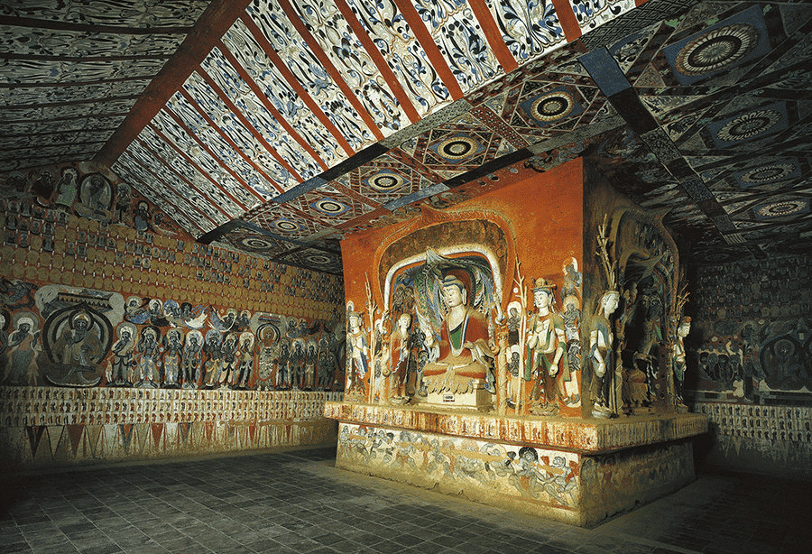
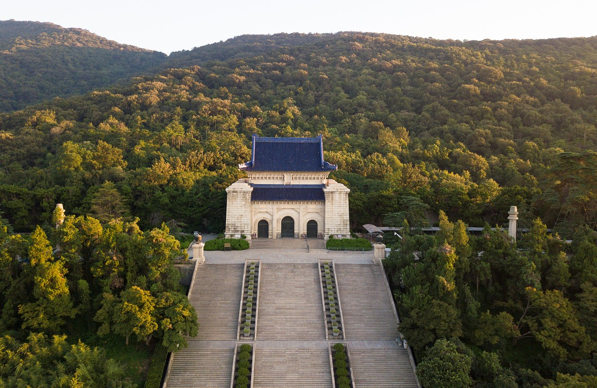

The Forbidden City
The imperial palace of Ming and Qing dynasties in Beijing, with over 900 buildings and centuries of Chinese history behind its red walls.
 Learn more →
Learn more →
A famous archaeological site in Xi'an, Shaanxi Province, discovered in 1974. Thousands of life-sized terracotta soldiers were buried with the first emperor of China.
Learn more →The imperial palace of Ming and Qing dynasties in Beijing, with over 900 buildings and centuries of Chinese history behind its red walls.
Learn more →
Located in Dunhuang, the Mogao Caves house an enormous collection of Buddhist artwork, murals, and scriptures dating back over a thousand years.

Learn more →Sanxingdui is a Bronze Age archaeological site in Sichuan, known for its mysterious and sophisticated ancient relics.
 Learn more →
Learn more →
The resting place of Dr. Sun Yat-sen, located at the foot of Purple Mountain in Nanjing.

Learn more →